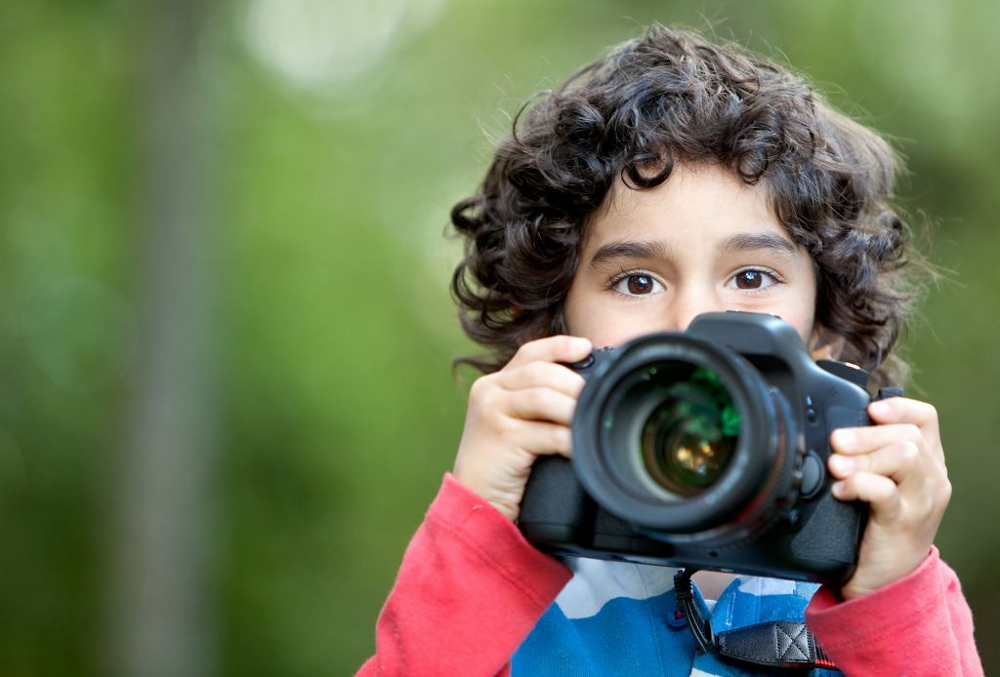
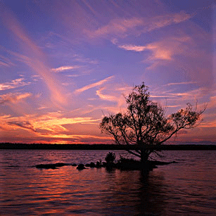
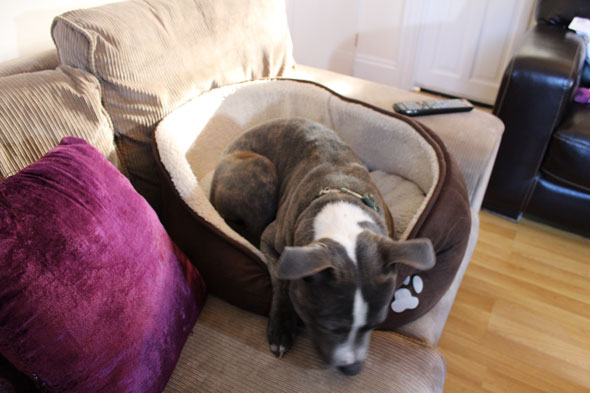
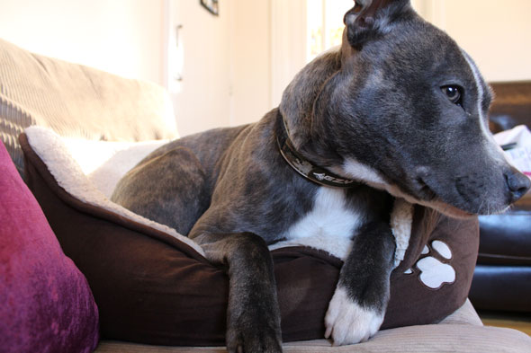
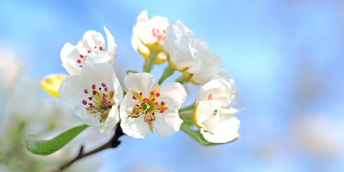

Article Pixelooks
Posted on 8th October 2017

Photography is one of the hardest things I’ve ever studied — even harder than programming or learning how to write well, if you can believe it. Not that pointing a camera and pressing a button is difficult, of course. What’s difficult is getting a shot to match your vision. It took me more than a year to produce the first photo I actually liked, and to this day I hate 99 out of every 100 photos I take. It’s a tough hobby to pick up and an even tougher career to pursue. But don’t let that dissuade you from learning photography. It’s extremely rewarding. I firmly believe that everyone should learn a bit of it because photography has ways of improving your life, most notably by making you happier. If you’re an absolute beginner, here are a handful of tips that I consider must-learn-first material.
1. The Exposure Triangle
Photography is all about manipulating and capturing light. Most beginners think that the magic of photography happens in the body of a camera, but the true source of magic is light. A well-lit subject can still be captured poorly, but a poorly-lit subject will never look good. Light is everything.
And in order to snap a good shot, you must know the exposure triangle. When taking a photo, the camera opens its shutter and starts to let in light through the lens. This light hits the camera sensor, which is then processed as an image. Three factors affect the resulting image:
Aperture — The size of the lens opening, often stated in the form of f/2, f/5, f/11, etc. The smaller the number, the wider the aperture opening. The wider the aperture, the more light is let in. Aperture size also affects depth of field (which affects, for example, background blur).
Shutter Speed — How long the shutter is left open, often stated in the form of 1/200 sec, 1/60 sec, 5 sec, etc. The slower the shutter speed, the more light is let in. Shutter speed also affects sensitivity to motion (faster speeds will freeze motion, slower speeds will motion blur).
ISO — How sensitive the sensor is to light, simply stated as 100 ISO, 400 ISO, 6400 ISO, etc. Higher ISOs allow you to take photos in darker situations, but the trade-off is noise (“grain”). That’s why photos in the dark often have those characteristic spots.
Entire courses have been taught on the exposure triangle, so consider this nothing more than a brief overview. The takeaway is that you must master all three factors — aperture, shutter speed, ISO — in order to take photos that come anywhere close to your vision. And trust me: this topic is much deeper than you think, so you should get started sooner rather than later.
2. The Rule of Thirds.
Most of the time, you can instantly get a sense of whether or not a given photo was taken by an amateur or someone with a lot of photographic experience. This is because amateurs don’t have a feel for composition, and good composition is the soul of a great photograph.
Composition is the placement of every element in a photograph.It describes how a photo is “composed,” which implies intentionality. Someone who pays no mind to composition can only take good shots by coincidence. On the other hand, once you truly have a grasp of composition, you’ll be able to create great shots out of every subject, location, and circumstance.

Of the many theories on how to compose a shot, the easiest and most effective is the rule of thirds: mentally divide the image into thirds using two vertical lines and two horizontal lines, then place elements of high visual interest at any of the four intersections.
Every photographer uses this technique. Some use it as a crutch, others use it as a fallback method when other compositional techniques fail for a given shot. Regardless, the rule of thirds must be part of your arsenal. There aren’t many tips that’ll give you as much bang-for-the-buck as this one.
3. Change Your Perspective
One way to ensure an unremarkable photo is to snap a subject straight-on from eye level. Everyone knows this viewpoint already — we interact with the world from this viewpoint every single day. It’s ordinary, tired, boring. Fortunately the fix is easy: shoot from a different vantage!
This can mean a few things. Change your elevation: get closer to the ground or stand atop a water tower. Change your angle: instead of straight-on, try straight up or skewed from the side. Change your distance, in particular by getting closer. Try a combination of all three. You’ll be surprised by how different your shots feel with these changes.
For example, compare the following two shots:


Yes, it’s a straight-on angle, but the camera changed elevation (closer to the ground) and changed distance (closer to the subject). The first photo is what we normally see, hence uninteresting. The second photo isn’t something we see every day, thus more compelling.
4. Post-Processing Is Essential
The term post-processing is often misunderstood as “radically change the source photo using high-impact filters or effects,” which has sparked a quasi-movement of photographers who have vowed to never retouch their photos. They aim for “natural” photos — no airbrushing, no tricks. Their intentions are noble, but they’re also throwing the baby out with the bathwater. Post-processing can be subtle and natural too! The truth is, cameras are flawed devices with physical limitations. Often times, it simply isn’t possible to capture perfectly in-camera.

Think of it like cosmetic makeup. Yes, some people go overboard with too much blush and lipstick (i.e. unskilled post-processing). Others go bold with their makeup as a means of self-expression (i.e. intentional stylistic post-processing). But most use makeup to complement their features, and it’s so subtle that you don’t even realize they’re wearing any.
Even if you’re a “natural” photographer, you need to post-process your images! Don’t be like me and overlook this important skill — you’ll eventually go through a phase where all your shots feel like they’re missing something, and that something will be a bit of post-processing love. Then again, be careful not to rely on post-processing as a crutch. All things in moderation.
5. Don’t Blame Your Gear
I won’t say that gear doesn’t matter. It absolutely does matter — but not as much as you think. As they say, a skilled photographer can produce great photos with a crappy camera but a newbie photographer won’t get much good out of professional-grade equipment.
It comes down to what we discussed above: light, exposure, composition, angles, perspective, with however much post-processing you want to use. If you can master all of those things, you’ll be able to take great shots with anything, even a smartphone. (In fact, smartphone cameras are great!)

Obviously there are limits to your equipment, and it’s definitely possible to outgrow a certain camera, lens, speedlight, or accessory. Bad gear can hinder you. But the takeaway is that upgrading your gear won’t upgrade your photography skills. The sooner you accept this, the faster you’ll improve and progress.
11 Tips for Beginner Photographers
It’s possible to get very nice photos with an inexpensive point and shoot. See these examples on Flickr.
5 Things to Consider When doing Photography
Photography is one of the hardest things I’ve ever studied — even harder than programming or learning how to write well, if you can believe it.
8 On-Camera Flash Tips: How To Get Better Lighting From Your On-Camera Flashy
You can get great lighting for your portraits with on-camera flash. And there’s no need to purchase expensive attachments to modify your light, because everything you need is already there.
20 Amazing Photography Tips and Techniques
As a photographer, there are few things more satisfying than mastering a new photography technique. Learning new photography techniques can open up new possibilities, provide endless potential for inspiration, and can even help to get you out of a creative rut.